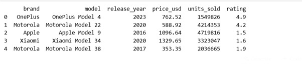
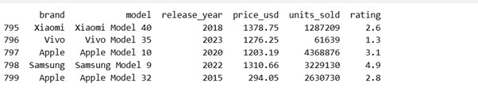
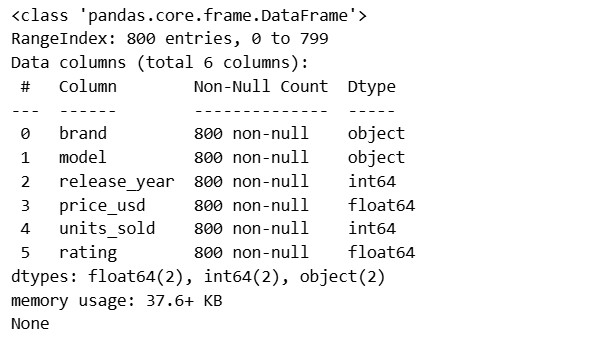
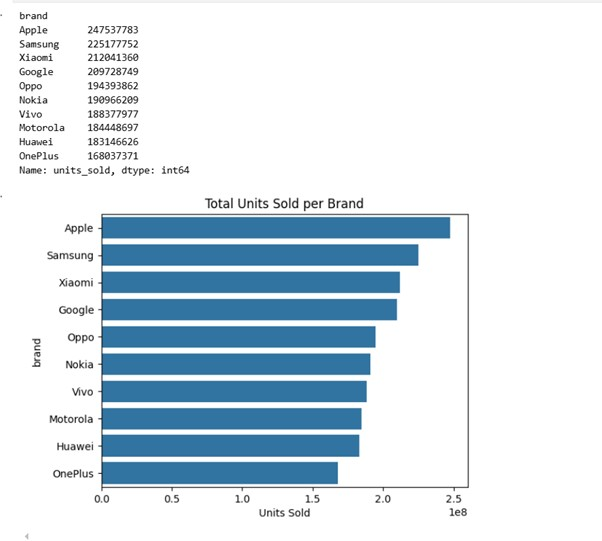
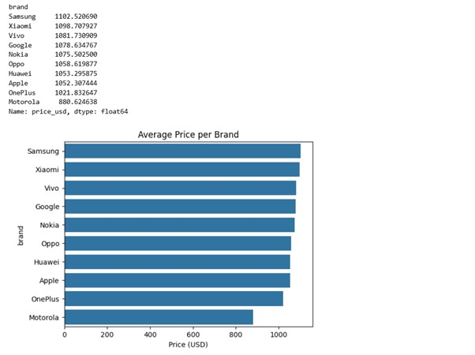
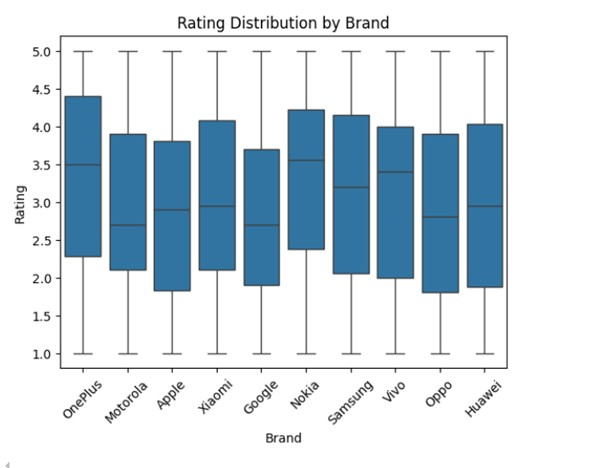
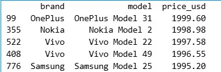
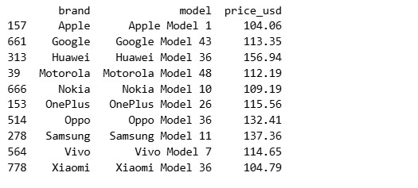
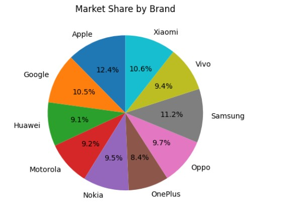
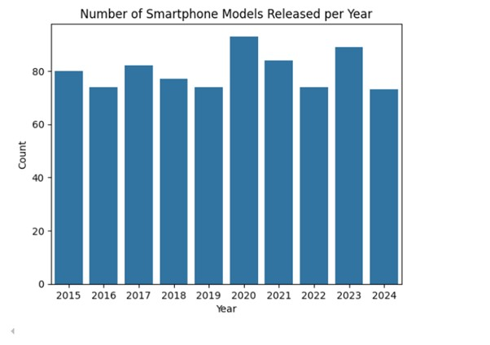

In this project, we explore smartphone sales data to uncover trends in pricing, ratings, and market share using Python. Each section contains the Python code, its corresponding output, and an explanation.
import pandas as pd import matplotlib.pyplot as plt import seaborn as sns
df = pd.read_excel('smartphone_sales.xlsx')
df.head()
df.tail()


print(df.info())
#Total units sold per brand
brand_sales = df.groupby('brand')['units_sold'].sum().sort_values(ascending=False)
print(brand_sales)
sns.barplot(x=brand_sales.values, y=brand_sales.index)
plt.title('Total Units Sold per Brand')
plt.xlabel('Units Sold')
plt.show()

avg_price = df.groupby('brand')['price_usd'].mean().sort_values(ascending=False)
print(avg_price)
sns.barplot(x=avg_price.values, y=avg_price.index)
plt.title('Average Price per Brand')
plt.xlabel('Price (USD)')
plt.show()

sns.boxplot(data=df, x='brand', y='rating')
plt.title('Rating Distribution by Brand')
plt.xlabel('Brand')
plt.ylabel('Rating')
plt.xticks(rotation=45)
plt.show()
Ouput:

top_expensive = df.nlargest(5, 'price_usd')[['brand', 'model', 'price_usd']] print(top_expensive) Ouput:
cheapest_per_brand = df.loc[df.groupby('brand')['price_usd'].idxmin()][['brand', 'model', 'price_usd']]
print(cheapest_per_brand)
Ouput:

brand_share = df.groupby('brand')['units_sold'].sum()
brand_share.plot(kind='pie', autopct='%1.1f%%', startangle=90)
plt.title('Market Share by Brand')
plt.ylabel('')
plt.show()

models_per_year = df.groupby('release_year')['model'].count()
sns.barplot(x=models_per_year.index, y=models_per_year.values)
plt.title('Number of Smartphone Models Released per Year')
plt.xlabel('Year')
plt.ylabel('Count')
plt.show()
Ouput:
